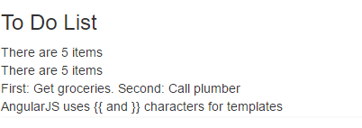
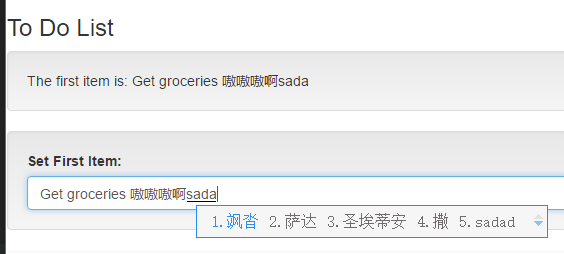
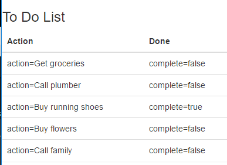
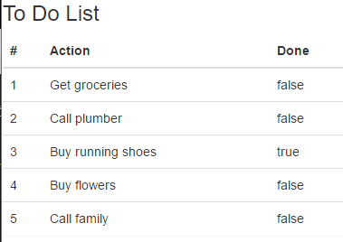
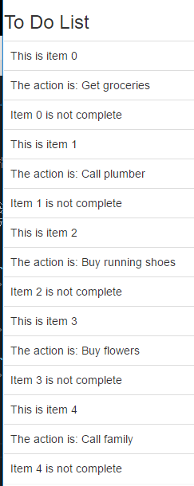
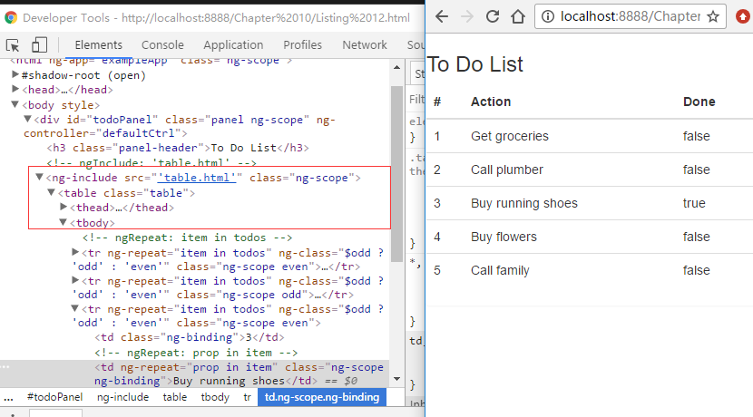
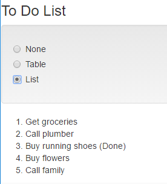

angularjs入门笔记-12-绑定和模版指令
学习ng中的绑定，模版指令，同时搞清楚为什么需要这些功能，以及何时应该使用这些功能。
指令其实是指ng通过包含或者增强HTML来创建应用程序，将其作为一个独立的基础模块，初始的时候发现这种混杂着标准和自定义的标签的方式有些不适应，但是熟悉之后就会很开心的接受并使用它们了。
为什么使用指令：
指令暴露了ng的核心功能，比如事件处理，表单验证，模版，在这些功能基础之上自定义指令在视图中将模块封装起来，一块一块的组装成整个程序。
何时使用：
ng中的各个部分都可以使用指令。
绑定
数据绑定是指令中最方便快捷，也最容易上手和强大的功能之一，这种数据绑定的方式使得ng的模版成为开发框架的基础，数据绑定即将模型model中的值插入到html中显示出来。
简单的说，数据绑定分为单向和双向两类，包括
- ng-bind, 绑定一个html元素的innerText属性，最常用功能，有一个快捷方法：使用两个重叠的大括号
- ng-bind-html, 绑定一个html元素的innerHTML属性，这种方法有一些风险，因为这意味着其实是将内容解释为html标签，是代码，而不是文本。即有可能会存在恶意的代码。
- ng-bind-template, 与ng-bind类似，但运行绑定多个表达式，实际开发中基本不会用到
- ng-non-bindable, 声明一个不会执行数据绑定的区域，主要用于解决快捷绑定的转义问题
注：以上的几种方式可以作为html元素的属性（常用），也可以作为元素的class（不常用）。1
2
3
4<!-- 作为属性 -->
<p>There are <span ng-bind="todos.length"></span> items</p>
<!-- 作为class -->
<p>There are <span class="ng-bind:todos.length"></span> items</p>
以下示例展示单向绑定以及非绑定（转义）的使用：1
2
3
4
5
6
7
8
9
10
11
12
13
14
15
16
17
18
19
20
21
22
23
24
25
26
27
28
29
30
31
32
33
34
35
36
37
38<html ng-app="exampleApp">
<head>
<title>Directives</title>
<script src="angular.js"></script>
<link href="bootstrap.css" rel="stylesheet" />
<link href="bootstrap-theme.css" rel="stylesheet" />
<script>
angular.module("exampleApp", [])
.controller("defaultCtrl", function ($scope) {
$scope.todos = [
{ action: "Get groceries", complete: false },
{ action: "Call plumber", complete: false },
{ action: "Buy running shoes", complete: true },
{ action: "Buy flowers", complete: false },
{ action: "Call family", complete: false }];
});
</script>
</head>
<body>
<div id="todoPanel" class="panel" ng-controller="defaultCtrl">
<h3 class="panel-header">To Do List</h3>
<div>There are {{todos.length}} items</div>
<div>
There are <span ng-bind="todos.length"></span> items
</div>
<div ng-bind-template=
"First: {{todos[0].action}}. Second: {{todos[1].action}}">
</div>
<div ng-non-bindable>
AngularJS uses {{ and }} characters for templates
</div>
</div>
</body>
</html>

如下示例修改body中的部分代码展示了双向绑定：
双向绑定用于那些允许用户输入的数据值的元素，即input,textarea,select等，ng-model指令对所应用元素的内容进行跟踪，实时的更新数据模型以响应用户的修改。数据模型的变化会被传递到所有绑定上，保证了应用上数据和视图的同步。1
2
3
4
5
6
7
8
9<h3 class="panel-header">To Do List</h3>
<div class="well">
<div>The first item is: {{todos[0].action}}</div>
</div>
<div class="form-group well">
<label for="firstItem">Set First Item:</label>
<input name="firstItem" class="form-control" ng-model="todos[0].action" />
</div>

其实若自己实现双向绑定也不困难，监听input元素的更改，然后更改对应的展示元素即可（ng中是通过$scope服务对事件进行传播的，所以能快速的更新到所有的绑定元素上)
模版指令
ng包含了一些可使用模版生成html的指令，使得根据数据集合向模版添加一些基本的逻辑变得更加方便。
- ng-cloak， 用css样式隐藏内联的绑定表达式，但在第一次加载页面时ng的绑定表达式会短暂可见
- ng-include, 向dom中插入一段html
- ng-repeat，迭代的数组中或对象中的单项数据生成html
- ng-repeat-start, 表示包含多个顶层元素的重复区域的开始部分，具体看示例
- ng-repeat-end，类似start，但表示结束部分
- ng-switch，根据数据绑定的值修改dom中的元素
绑定对象的键值，1
2
3
4
5
6
7
8
9
10
11
12
13
14
15<table class="table">
<thead>
<tr>
<th>Action</th>
<th>Done</th>
</tr>
</thead>
<tbody>
<tr ng-repeat="item in todos">
<td ng-repeat="(key, value) in item">
{{key}}={{value}}
</td>
</tr>
</tbody>
</table>

同时ng-repeat指令还有一些内置的变量：
- $index 返回当前对象或属性的索引位置
- $first 若当前对象为集合中的第一个则返回true
- $last 若为最后一个则返回true
- $middle 若当前对象不是第一个也不是最后一个则返回true
- $even 若当前对象为第偶数个则返回true
- $odd 若为奇数个则返回true
1 | <table class="table"> |

ng-repeat指令对所处理对象或属性重复生成多个顶层元素和内容，在需要对每个处理的数据项生成多个表格时最常遇到这种问题，比如tr元素1
2
3
4
5
6
7
8
9
10
11<tbody>
<tr ng-repeat-start="item in todos">
<td>This is item {{$index}}</td>
</tr>
<tr>
<td>The action is: {{item.action}}</td>
</tr>
<tr ng-repeat-end>
<td>Item {{$index}} is {{$item.complete? '' : "not "}} complete</td>
</tr>
</tbody>

ng-include即可作为html元素，也可作为属性和class，但是注意，当作为元素使用的时候，必须有关闭标签，而不是空标签。同时注意include使用的时候用了单引号将文件位置指定为字符串变量。
1 | <div id="todoPanel" class="panel" ng-controller="defaultCtrl"> |
table.html文件内容1
2
3
4
5
6
7
8
9
10
11
12
13<table class="table">
<thead>
<tr>
<th>#</th>
<th>Action</th>
<th>Done</th>
</tr>
</thead>
<tr ng-repeat="item in todos" ng-class="$odd ? 'odd' : 'even'">
<td>{{$index + 1}}</td>
<td ng-repeat="prop in item">{{prop}}</td>
</tr>
</table>

ng-include有三个配置参数：
- src 指定要加载的内容的url变量，本质其实是使用ajax的方式加载，即这个地址是可以计算的变量。
- onload 指定在内容被加载时调用的表达式
- autoscroll 指定加载是是否应该滚动到视图区域
1 | $scope.viewFile = function () { |
1 | <ng-include src="viewFile()"></ng-include> |
使用ng-switch也能做到切换局部的视图：
1 | <div class="well"> |

区别：
ng-switch用于文档间较小代码块的切换，ng-switch指令所需的内容是作为html文档的一部分的，而ng-include多用于处理较复杂或较多且独立的局部片段，尤其是需要在不同地方包含相同的内容时，局部视图有助于减少重复。